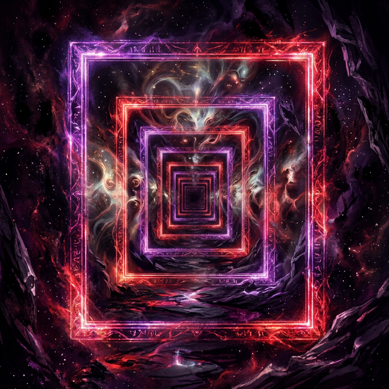

The Mask of Identity
Dive into our interactive learning module. Explore the fluid nature of identity, the process of objectifying your thoughts, and how to transcend reflexive habits.

The Cosmic Organism
Explore the universe as a massive, self-regulating body. Understand how adaptation laws scale from the microscopic to the cosmic, and how your local state resonates through the whole.

The Eternal Frame
Discover why the universe cannot render a frame in which you cease to exist as an observer. Explore logical continuity, quantum immortality, and the self-correcting filter of coherent reality.

Spiritual Alchemy
Master the intentional saturation of your internal environment. Learn to treat the ego as a petri dish, curating specific variables to force a deliberate evolution of the self beyond biological defaults.

The Field Observer
Understand experience as light from the unified field filtered through the ego-lens. Learn to widen your aperture through stillness, select from uncollapsed potential, and maintain identity fluidity under pressure.

The Invisible Gate
Decode the hidden mechanics of social systems. Learn why access never comes from force and how trust, resonance, and consistent behavior silently accumulate into the influence that opens every door.

The Pure Observer
Discover the distinction between you and your thoughts. Learn why you are the awareness watching mental activity - not the activity itself - and how that shift in position returns you to the steadiness that was always there.

The Architecture of Discipline
Discover why willpower always breaks and structure never has to. Learn to design your environment so movement becomes the path of least resistance - and alignment turns high output into rhythm.
〜
The Signal You Broadcast
People run pattern recognition on you within seconds. Learn why conscious representation is not manipulation - and why no tactic works until your inner frame matches the frequency you want the world to read.